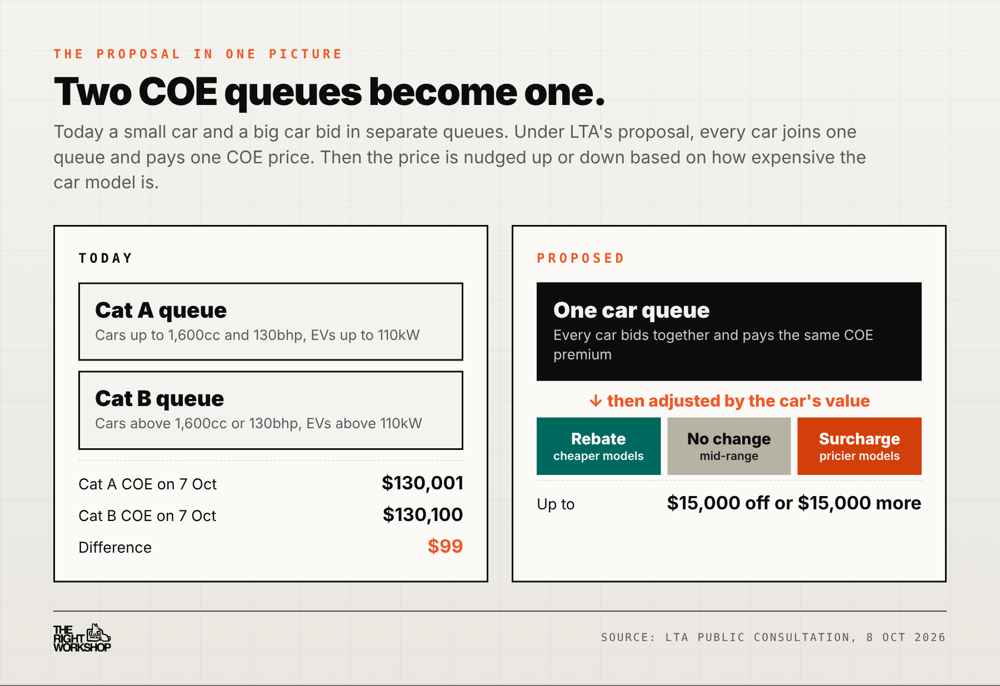
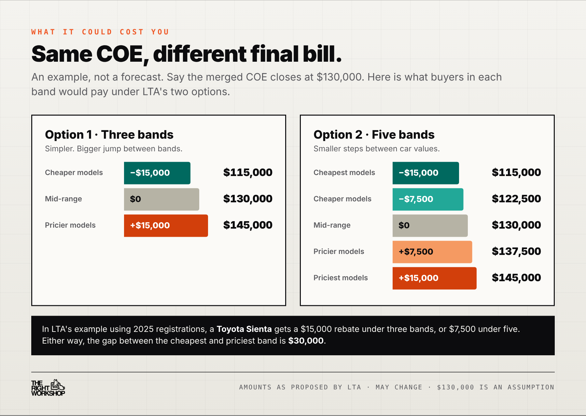
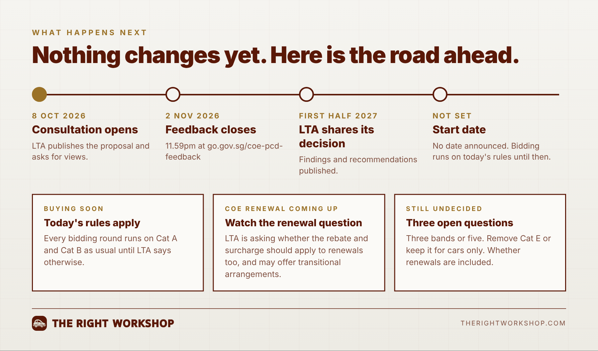

LTA today proposed a new COE system for cars. Cat A and Cat B would merge into one category, and buyers would then get money off or pay extra depending on how expensive their car is. It is only a proposal for now, and LTA wants public feedback by 2 November 2026.

LTA would rank every car model by its value (its open market value, or OMV) and sort them into bands. Your band decides what you pay on top of, or off, the COE price. LTA is choosing between two options:
LTA's own example: a Toyota Sienta would get $15,000 off under three bands, or $7,500 off under five. The bands would be updated every year.

Cat A was meant to keep COEs cheaper for smaller, mass-market cars. That has stopped working. At yesterday's bidding on 7 October, Cat A closed at $130,001 and Cat B at $130,100, only $99 apart. Linking the COE to the car's price is LTA's way of making pricier cars pay more again.

Buying a car soon: nothing changes yet. COE bidding runs on today's Cat A and Cat B rules until LTA says otherwise. See the latest prices on our COE results page.
Renewing your COE soon: today's rules apply. LTA has said it could consider transitional arrangements for current owners. Our COE renewal vs scrap guide helps you decide.
Want a say: give feedback at go.gov.sg/coe-pcd-feedback before 2 November 2026, 11.59pm.
If the car's value starts to decide your COE bill, it pays to know exactly what you are buying. Our pre-purchase inspection checks any new or used car before you commit.
We'll track every update on our news feed, and you can also check the OneMotoring portal for official notices.